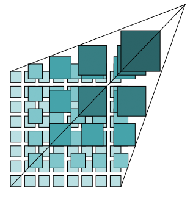
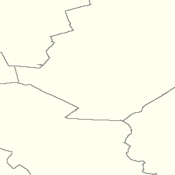
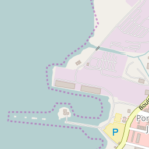

WMTS - Operations¶
Background¶
- History
Version 1.0.0 of the WMTS Specification (“WMTS Spec”) 07-057r7 OpenGIS Web Map Tile Service Implementation Standard was published in 2010, and the Web Map Tile Service Simple Profile was published in 2016.
- Versions
1.0.0 is the current latest version.
- Test Suite
A beta version of the OGC Web Map Tile Service 1.0.0 - Executable Test Suite was available as of July 2017. Updates can be found at the OGC Compliance Program Available Tests and Roadmap.
- Implementations
Information regarding WMTS implementations can be found under OGC Implementation Statistics.
Usage¶
WMTS provides a standards-based solution to serve digital maps using predefined image tiles. The service advertises the tiles it has available through a standardized declaration in the ServiceMetadata document common to all OGC web services. This declaration defines the tiles available in each layer (i.e., each type of content), in each graphical representation style, in each format, in each coordinate reference system, at each scale, and over each geographic fragment of the total covered area. The ServiceMetadata document also declares the communication protocols and encodings through which clients can interact with the server. Clients can interpret the ServiceMetadata document to request specific tiles.
WMTS was built to assist in developing scalable, high performance services for web based distribution of cartographic maps. It offers a standardized approach to declaring the images that can be requested from a server, enabling a single client type to be developed for all servers. It can accommodate both resource-oriented (REST-like) and procedural-oriented architectural styles (KVP and SOAP encoding).
Relation to other OGC Standards¶
WMTS complements the OGC Web Map Service interface standard (WMS) for the web based distribution of cartographic maps. WMS focuses on flexibility in the client request enabling clients to obtain exactly the final image they want. While WMS focuses on rendering custom maps and is well-suited for dynamic data or custom styled maps, WMTS trades the flexibility of custom map rendering for the scalability made possible by serving static data (base maps) where the bounding box and scales have been constrained to discrete tiles. The fixed set of tiles allows for the implementation of a WMTS service using a web server that simply returns existing files. The fixed set of tiles also enables the use of standard network mechanisms for scalability such as distributed cache systems. WMS servers can also be used as data sources or rendering engines for WMTS services.
A client may also request that the map layers be rendered using a specific server advertised style, or even use a style provided by the client when the WMS server implements the OGC Styled Layer Descriptor (SLD) standard).
The OGC Web Feature Service Interface Standard (WFS) is a better fit for extended query functionality of spatial data. It provides programmatic access to the geographic feature data. An organization publishing both WMS and WFS often use the same data source.
Overview of WMTS Operations and Resources¶
The WMTS Specification (“WMTS Spec”) 07-057r7 OpenGIS Web Map Tile Service Implementation Standard describes the semantics of resources offered by conformant servers and requested by clients. It specifies the semantics of the ServiceMetadata document, of the Tile images or representations, and of the optional FeatureInfo documents providing descriptions of the maps at specific locations.
The WMTS Spec specifies client-server exchange mechanisms under two distinct architectural styles. Under the first “procedural-oriented” style, the requests and responses for GetCapabilities, GetTile and (optional) GetFeatureInfo operations use the encodings of Key-Value Pair (KVP) requests with “plain-old XML” (POX) responses or XML messages embedded in SOAP envelopes.
Under the second “resource-oriented” style, request mechanisms and an endpoint publishing strategy are specified to enable an approach more closely resembling that of REpresentational State Transfer (REST). This approach is based on web URL endpoints that enable clients to directly access the ServiceMetadata, Tile, and FeatureInfo resources as documents. The request is implicit in the URL itself.
Under a resource-oriented style, a scalable WMTS service could be created using no image processing logic at all by pre-rendering images and relying only on an ordinary web server to return the static ServiceMetadata XML document and provide the image tile files. The images are considered by the HTTP protocol to be standard web resources, and providers could leverage their existing technologies to improve the flow of those resources to requesting clients.
Whichever style is used, WMTS-enabled services can generally offer advantages in performance and scalability by dividing maps into individual tiles that can be returned quickly. Performance can be enhanced by utilizing locally stored, pre-rendered tiles that will not require any image manipulation or geoprocessing. With tile-based mapping, it is important that servers be able to handle asynchronous access to tiles, as most clients will simultaneously request multiple tiles to fill a single view.
The WMTS interface allows a client to retrieve three general types of resources:
- ServiceMetadata resource
A ServiceMetadata resource (accessed directly under the resource-oriented style or in response to a GetCapabilities operation under the procedural-oriented style) is required in compliant implementations. It describes the abilities and information holdings of the specific server implementation.
- Tile resource
A Tile resource (accessed directly under the resource-oriented style or in response to a GetTile operation under the procedural-oriented style) is required in compliant implementations. It shows a fragment of a map representation of a layer.
- FeatureInfo resource
A FeatureInfo resource (accessed directly under the resource-oriented style or in response to a GetFeatureInfo operation under the procedural-oriented style) is optional. It provides information about the features located at a particular pixel of a tile map. It does this in a manner similar to the WMS GetFeatureInfo operation by providing, for example, thematic attribute name and value pairs in textual form.
The WMTS serves a single tile of a single layer of a map. As illustrated in the following figure, tiles are related in a hierarchy called a “Tile Matrix Set” in which coarse-resolution tiles are nearer the top and finer resolution tiles nearer the bottom.
{kind=link}
Unlike WMS, there is no specified way to request a server to combine and return a map tile with information coming from more than one layer in a single retrieval. WMTS clients that want to show a combination of layers must make independent requests for the layer tiles and then combine or overlay the responses. Also, bounding boxes and scales of these WMTS tiles are constrained to a discrete set of values.
A full explanation of the geometry of the tiled space can be found in Clause 6.1 of the WMTS Spec.
Examples for Retrieving ServiceMetadata¶
Example GetCapabilities Requests¶
Under the procedural-oriented style, a WMTS client can invoke a KVP ServiceMetadata request in the following manner. This example was adapted from the WMTS 1.0.0 Reference Implementation at the OGC Compliance Testing GitHub Wiki <https://github.com/opengeospatial/cite/wiki/Reference-Implementations>.
http://cite.deegree.org/deegree-webservices-3.4-RC3/services/wmts100?
service=WMTS&
request=GetCapabilities
The same request using SOAP would have the following form:
<?xml version="1.0" encoding="UTF-8"?>
<soap:Envelope xmlns:soap="http://www.w3.org/2003/05/soap-envelope"
xmlns:xsi="http://www.w3.org/2001/XMLSchema-instance"
xmlns:xsd="http://www.w3.org/2001/XMLSchema"
xsi:schemaLocation="http://www.w3.org/2003/05/soap-envelope http://www.w3.org/2003/05/soap-envelope">
<soap:Body>
<GetCapabilities xmlns="http://www.opengis.net/wmts/1.0"
xmlns:ows="http://www.opengis.net/ows/1.1"
xsi:schemaLocation="http://www.opengis.net/wmts/1.0 http://schemas.opengis.net/wmts/1.0/wmtsGetCapabilities_request.xsd"
service="WMTS">
<ows:AcceptVersions>
<ows:Version>1.0.0</ows:Version>
</ows:AcceptVersions>
<ows:AcceptFormats>
<ows:OutputFormat>application/xml</ows:OutputFormat>
</ows:AcceptFormats>
</GetCapabilities>
</soap:Body>
</soap:Envelope>
Under a resource-oriented style, a representative example might be:
http://cite.deegree.org/1.0.0/WMTSCapabilities.xml
Example GetCapabilities Response: POX¶
An example of a compliant WMTS service’s POX response to a procedural-oriented GetCapabilities KVP request operation is presented below.
The following figure provides a summary-level depiction of the major content blocks:

This response declares the service’s support for KVP GetCapabilities operations. WMTS services in practice might contain many more Layers, TileMatrixSets, and Themes than just the several shown here.
This example was adapted from content in the WMTS Schemas, which are part of the WMTS Specification. The corresponding XML schema can be found in the same location. Some of the lengthy XML content has been removed and replaced by brief comments in order to reduce the space consumed by the full response.
<?xml version="1.0" encoding="UTF-8"?>
<Capabilities xmlns="http://www.opengis.net/wmts/1.0"
xmlns:ows="http://www.opengis.net/ows/1.1"
xmlns:xlink="http://www.w3.org/1999/xlink"
xmlns:xsi="http://www.w3.org/2001/XMLSchema-instance"
xmlns:gml="http://www.opengis.net/gml"
xsi:schemaLocation="http://www.opengis.net/wmts/1.0 http://schemas.opengis.net/wmts/1.0/wmtsGetCapabilities_response.xsd"
version="1.0.0">
<ows:ServiceIdentification>
<ows:Title>World example Web Map Tile Service</ows:Title>
<ows:Abstract>Example service that constrains some world layers
in the urn:ogc:def:wkss:OGC:1.0:GlobalCRS84Pixel Well-known
scale set</ows:Abstract>
<ows:Keywords>
<ows:Keyword>World</ows:Keyword>
<ows:Keyword>Global</ows:Keyword>
<ows:Keyword>Digital Elevation Model</ows:Keyword>
<ows:Keyword>Administrative Boundaries</ows:Keyword>
</ows:Keywords>
<ows:ServiceType>OGC WMTS</ows:ServiceType>
<ows:ServiceTypeVersion>1.0.0</ows:ServiceTypeVersion>
<ows:Fees>none</ows:Fees>
<ows:AccessConstraints>none</ows:AccessConstraints>
</ows:ServiceIdentification>
<ows:ServiceProvider>
<ows:ProviderName>UAB-CREAF-MiraMon</ows:ProviderName>
<ows:ProviderSite xlink:href="http://www.creaf.uab.es/miramon"/>
<ows:ServiceContact>
<ows:IndividualName>Joan Maso Pau</ows:IndividualName>
<ows:PositionName>Senior Software Engineer</ows:PositionName>
<ows:ContactInfo>
<ows:Phone>
<ows:Voice>+34 93 581 1312</ows:Voice>
<ows:Facsimile>+34 93 581 4151</ows:Facsimile>
</ows:Phone>
<ows:Address>
<ows:DeliveryPoint>Fac Ciencies UAB</ows:DeliveryPoint>
<ows:City>Bellaterra</ows:City>
<ows:AdministrativeArea>Barcelona</ows:AdministrativeArea>
<ows:PostalCode>08193</ows:PostalCode>
<ows:Country>Spain</ows:Country>
<ows:ElectronicMailAddress>joan.maso@uab.es</ows:ElectronicMailAddress>
</ows:Address>
</ows:ContactInfo>
</ows:ServiceContact>
</ows:ServiceProvider>
<ows:OperationsMetadata>
<ows:Operation name="GetCapabilities">
<ows:DCP>
<ows:HTTP>
<ows:Get xlink:href="http://cite.deegree.org/1.0.0">
<ows:Constraint name="GetEncoding">
<ows:AllowedValues>
<ows:Value>KVP</ows:Value>
</ows:AllowedValues>
</ows:Constraint>
</ows:Post>
</ows:HTTP>
</ows:DCP>
</ows:Operation>
<ows:Operation name="GetTile">
<ows:DCP>
<ows:HTTP>
<ows:Post xlink:href="http://cite.deegree.org/1.0.0">
<ows:Constraint name="GetEncoding">
<ows:AllowedValues>
<ows:Value>KVP</ows:Value>
</ows:AllowedValues>
</ows:Constraint>
</ows:Post>
</ows:HTTP>
</ows:DCP>
</ows:Operation>
</ows:OperationsMetadata>
<Contents>
<Layer>
<ows:Title>etopo2</ows:Title>
<ows:Abstract>ETOPO2 - 2 minute Worldwide Bathymetry/Topography
Data taken from National Geophysical Data Center(NGDC) CD-ROM, ETOPO2 Global 2' Elevations, September 2001.
<!-- ***************************************************** -->
<!-- [... insert additional Abstract information here ...] -->
<!-- ***************************************************** -->
</ows:Abstract>
<ows:WGS84BoundingBox>
<ows:LowerCorner>-180 -90</ows:LowerCorner>
<ows:UpperCorner>180 90</ows:UpperCorner>
</ows:WGS84BoundingBox>
<ows:Identifier>etopo2</ows:Identifier>
<ows:Metadata xlink:href="http://www.opengis.uab.es/SITiled/world/etopo2/metadata.htm"/>
<Style isDefault="true">
<ows:Title>default</ows:Title>
<ows:Identifier>default</ows:Identifier>
<LegendURL format="image/png" xlink:href="http://www.opengis.uab.es/SITiled/world/etopo2/legend.png"/>
</Style>
<Format>image/png</Format>
<InfoFormat>application/gml+xml; version=3.1</InfoFormat>
<TileMatrixSetLink>
<TileMatrixSet>WholeWorld_CRS_84</TileMatrixSet>
</TileMatrixSetLink>
<ResourceURL format="image/png" resourceType="tile" template="http://www.opengis.uab.es/SITiled/world/etopo2/default/WholeWorld_CRS_84/{TileMatrix}/{TileRow}/{TileCol}.png"/>
<ResourceURL format="application/gml+xml; version=3.1" resourceType="FeatureInfo" template="http://www.opengis.uab.es/SITiled/world/etopo2/default/WholeWorld_CRS_84/{TileMatrix}/{TileRow}/{TileCol}/{J}/{I}.xml"/>
</Layer>
<Layer>
<ows:Title>Administrative Boundaries</ows:Title>
<ows:Abstract>The sub Country Administrative Units 1998
GeoDataset represents a small-scale world political map.
<!-- ***************************************************** -->
<!-- [... insert additional Abstract information here ...] -->
<!-- ***************************************************** -->
</ows:Abstract>
<ows:WGS84BoundingBox>
<ows:LowerCorner>-180 -90</ows:LowerCorner>
<ows:UpperCorner>180 84</ows:UpperCorner>
</ows:WGS84BoundingBox>
<ows:Identifier>AdminBoundaries</ows:Identifier>
<ows:Metadata xlink:href="http://www.opengis.uab.es/SITiled/world/AdminBoundaries/metadata.htm"/>
<Style isDefault="true">
<ows:Title>default</ows:Title>
<ows:Identifier>default</ows:Identifier>
</Style>
<Format>image/png</Format>
<TileMatrixSetLink>
<TileMatrixSet>World84-90_CRS_84</TileMatrixSet>
</TileMatrixSetLink>
<ResourceURL format="image/png" resourceType="tile" template="http://cite.deegree.org/1.0.0/cite/default/2007-06/InspireCrs84Quad/{TileMatrix}/{TileRow}/{TileCol}.png"/>
<ResourceURL format="application/gml+xml; version=3.1" resourceType="FeatureInfo" template="http://cite.deegree.org/1.0.0/cite/default/2007-06/InspireCrs84Quad/{TileMatrix}/{TileRow}/{TileCol}/{J}/{I}.xml"/>
</Layer>
<TileMatrixSet>
<!-- optional bounding box of data in this CRS -->
<ows:Identifier>WholeWorld_CRS_84</ows:Identifier>
<ows:SupportedCRS>urn:ogc:def:crs:OGC:1.3:CRS84</ows:SupportedCRS>
<WellKnownScaleSet>urn:ogc:def:wkss:OGC:1.0:GlobalCRS84Pixel</WellKnownScaleSet>
<TileMatrix>
<ows:Identifier>2g</ows:Identifier>
<ScaleDenominator>795139219.951954</ScaleDenominator>
<!-- top left point of tile matrix bounding box -->
<TopLeftCorner>-180 90</TopLeftCorner>
<!-- width and height of each tile in pixel units -->
<TileWidth>320</TileWidth>
<TileHeight>200</TileHeight>
<!-- width and height of matrix in tile units -->
<MatrixWidth>1</MatrixWidth>
<MatrixHeight>1</MatrixHeight>
</TileMatrix>
<TileMatrix>
<ows:Identifier>1g</ows:Identifier>
<ScaleDenominator>397569609.975977</ScaleDenominator>
<TopLeftCorner>-180 90</TopLeftCorner>
<TileWidth>320</TileWidth>
<TileHeight>200</TileHeight>
<MatrixWidth>2</MatrixWidth>
<MatrixHeight>1</MatrixHeight>
</TileMatrix>
<!-- *************************************************** -->
<!-- [... insert additional TileMatrix entries here ...] -->
<!-- *************************************************** -->
</TileMatrixSet>
</Contents>
<Themes>
<Theme>
<ows:Title>Foundation</ows:Title>
<ows:Abstract>World reference data</ows:Abstract>
<ows:Identifier>Foundation</ows:Identifier>
<Theme>
<ows:Title>Digital Elevation Model</ows:Title>
<ows:Identifier>DEM</ows:Identifier>
<LayerRef>etopo2</LayerRef>
</Theme>
<Theme>
<ows:Title>Administrative Boundaries</ows:Title>
<ows:Identifier>AdmBoundaries</ows:Identifier>
<LayerRef>AdminBoundaries</LayerRef>
</Theme>
</Theme>
<Theme>
<ows:Title>World Geology</ows:Title>
<ows:Identifier>World Geology</ows:Identifier>
<LayerRef>worldAgeRockType</LayerRef>
<LayerRef>worldFaultLines</LayerRef>
<LayerRef>felsicMagmatic</LayerRef>
<LayerRef>maficMagmatic</LayerRef>
</Theme>
</Themes>
<ServiceMetadataURL xlink:href="http://cite.deegree.org/1.0.0/WMTSCapabilities.xml"/>
</Capabilities>
Example GetCapabilities Response: SOAP¶
An abbreviated representation of the XML content of a ServiceMetadata document in response to a procedural-oriented SOAP-encoded GetCapabilities request is presented below. The primary differences compared to the POX response are [1] the presence of the SOAP envelope and [2] declaration of support for a SOAP interface in the OperationsMetadata section.
<?xml version="1.0" encoding="UTF-8"?>
<soap:Envelope xmlns:soap="http://www.w3.org/2003/05/soap-envelope"
xmlns:xsi="http://www.w3.org/2001/XMLSchema-instance"
xmlns:xsd="http://www.w3.org/2001/XMLSchema"
xsi:schemaLocation="http://www.w3.org/2003/05/soap-envelope http://www.w3.org/2003/05/soap-envelope">
<soap:Body>
<Capabilities version="1.0.0" ... >
<ows:ServiceIdentification>
<!-- **************************************************** -->
<!-- [... insert ServiceIdentification elements here ...] -->
<!-- **************************************************** -->
</ows:ServiceIdentification>
<ows:ServiceProvider>
<!-- ********************************************** -->
<!-- [... insert ServiceProvider elements here ...] -->
<!-- ********************************************** -->
</ows:ServiceProvider>
<ows:OperationsMetadata>
<ows:Operation name="GetCapabilities">
<ows:DCP>
<ows:HTTP>
<ows:Post xlink:href="http://www.opengis.uab.es/cgi-bin/world/MiraMon5_0.cgi?">
<ows:Constraint name="PostEncoding">
<ows:AllowedValues>
<ows:Value>SOAP</ows:Value>
</ows:AllowedValues>
</ows:Constraint>
</ows:Post>
</ows:HTTP>
</ows:DCP>
</ows:Operation>
<ows:Operation name="GetTile">
<ows:DCP>
<ows:HTTP>
<ows:Post xlink:href="http://www.opengis.uab.es/cgi-bin/world/MiraMon5_0.cgi?">
<ows:Constraint name="PostEncoding">
<ows:AllowedValues>
<ows:Value>SOAP</ows:Value>
</ows:AllowedValues>
</ows:Constraint>
</ows:Post>
</ows:HTTP>
</ows:DCP>
</ows:Operation>
</ows:OperationsMetadata>
<Contents>
<!-- *************************************** -->
<!-- [... insert Contents elements here ...] -->
<!-- *************************************** -->
</Contents>
<Themes>
<!-- ************************************* -->
<!-- [... insert Themes elements here ...] -->
<!-- ************************************* -->
</Themes>
</Capabilities>
</soap:Body>
</soap:Envelope>
Example ServiceMetadata Retrieval Under a Resource-Oriented Style¶
Under a resource-oriented style, the content of a ServiceMetadata document response would be virtually identical to that presented for the POX response except that HTTP encodings may not be described in an OperationsMetadata section (WMTS Spec Clause 7.1.1.1.1). Instead, “ResourceURL” within the Layer element and “ServiceMetadataURL” within the Capabilities element are used to identify the resource endpoints. These two element locations in the POX response have been replicated in the code block below for convenience.
<?xml version="1.0" encoding="UTF-8"?>
<Capabilities ... version="1.0.0">
<!-- ******************************************* -->
<!-- [... insert Capabilities elements here ...] -->
<!-- ******************************************* -->
<Contents>
<Layer>
<!-- ************************************ -->
<!-- [... insert Layer elements here ...] -->
<!-- ************************************ -->
<ResourceURL format="image/png" resourceType="tile" template="http://cite.deegree.org/1.0.0/cite/default/2007-06/InspireCrs84Quad/{TileMatrix}/{TileRow}/{TileCol}.png"/>
<ResourceURL format="application/gml+xml; version=3.1" resourceType="FeatureInfo" template="http://cite.deegree.org/1.0.0/cite/default/2007-06/InspireCrs84Quad/{TileMatrix}/{TileRow}/{TileCol}/{J}/{I}.xml"/>
</Layer>
<TileMatrixSet>
<!-- ******************************************** -->
<!-- [... insert TileMatrixSet elements here ...] -->
<!-- ******************************************** -->
</TileMatrixSet>
</Contents>
<Themes>
<!-- ************************************* -->
<!-- [... insert Themes elements here ...] -->
<!-- ************************************* -->
</Themes>
<ServiceMetadataURL xlink:href="http://cite.deegree.org/1.0.0/WMTSCapabilities.xml"/>
</Capabilities>
Example Client JavaScript Implementation to Retrieve JSON ServiceMetadata¶
The WMTS Specification is silent regarding JavaScript Object Notation (JSON). Hence including a JSON encoding in source code (e.g., JavaScript) invoking a request (or receiving a response) would have no bearing on an implementation’s compliance with the WMTS standard. However, the OGC Testbed 12 initiative provided instructive guidance in two documents, an engineering report and a user guide. The JavaScript JSON JSON- LD Engineering Report provides JSON examples that were adapted for use here in the WMTS case. Likewise, the JSON and GeoJSON User Guide includes WMS-based JavaScript examples, which have also been adapted to apply to WMTS.
A procedural-oriented style would require the existence of a WMTS service that has implemented an “acceptFormats” parameter as described in Clause “7.3.5 AcceptFormats parameter” of 06-121r9 OGC Web Services Common Implementation Specification. Using this service, a KVP GET request including a WMTS GetCapabilities operation could start with the following JavaScript “loadJSON” invocation.
loadJSON("http://cite.deegree.org/deegree-webservices-3.4-RC3/services/wmts100?request=GetCapabilities&service=WMTS&acceptsFormats=application/json",
ShowCapabilities,
function(xhr) { alert(xhr); }
)
A similar code fragment could be developed under a resource-oriented style by simply substituting the URL “http://cite.deegree.org/1.0.0/WMTSCapabilities.json” as the first parameter. No “acceptFormats” KVP would be required.
The first parameter identifies the URL of the service endpoint, including the acceptable JSON response type. The second parameter indicates that the “ShowCapabilities” function should be called back upon successful completion of the HTTP GET request. The third parameter identifies the callback for an HTTP failure path.
Representative JavaScript code for the loadJSON function appears below. This code would apply under either architectural style.
function loadJSON(path, success, error)
{
var xhr = new XMLHttpRequest();
xhr.onreadystatechange = function()
{
if (xhr.readyState === XMLHttpRequest.DONE) {
if (xhr.status === 200) {
if (success)
{
var data;
try {
data = JSON.parse(xhr.responseText);
} catch (e) {
if (error)
return error("JSON file: \""+ path + "\". " + e);
}
success(data);
}
} else {
if (error)
error("JSON file: \""+ path + "\". " + xhr.statusText);
}
}
};
xhr.open("GET", path, true);
xhr.send();
}
Invocation of this function would, under an HTTP-success execution path, de-serialize the content of a JSON response into JavaScript variables by invoking the “JSON.parse()” function. This function, along with the XMLHttpRequest object, is built into the base JavaScript library (i.e., part of the standard local client API) of most modern browsers.
Representative JavaScript code for the ShowCapabilities function appears below.
function ShowCapabilities(capabilities)
{
if (capabilities.serviceIdentification.serviceTypeVersion!=“1.0.0” ||
capabilities.serviceIdentification.serviceType.code!="WMTS")
alert("This is not a compatible WMTS JSON server");
alert("The provider name is: " +
capabilities.serviceProvider.providerName);
}
Due to the loadJSON() code to perform JSON.parse() on the xhr.responseText, the “capabilities” JavaScript variable will contain the response values, with subordinate key names matching what the element names would have been in a corresponding XML response.
More friendly user output for the loadJSON() error cases could be provided if something like the following JSON string were to be supplied by the WMTS service (reporting two HTTP exceptions in this example).
{
"type": "ExceptionReport",
"version": "1.0.0",
"lang": "en",
"exception": [{
"type": "Exception",
"exceptionCode": "MissingParameterValue",
"exceptionText": "Service parameter missing",
"locator": "service"
},{
"type": "Exception",
"exceptionCode": "InvalidParameterValue",
"exceptionText": "Version number not supported",
"locator": "version”
}]
}
Examples Requests and Responses for Tile Resources¶
Under the procedural-oriented style, a WMTS client can issue a KVP GetTile request in the following manner.
http://cite.deegree.org/deegree-webservices-3.4-RC3/services/wmts100?
service=WMTS&
request=GetTile&
version=1.0.0&
Layer=cite&
Style=default&
Format=image/png&
TileMatrixSet=InspireCrs84Quad&
TileMatrix=17&
TileRow=4&
TileCol=4
The same request using SOAP would have the following form:
<?xml version="1.0" encoding="UTF-8"?>
<soap:Envelope xmlns:soap="http://www.w3.org/2003/05/soap-envelope"
xmlns:xsi="http://www.w3.org/2001/XMLSchema-instance"
xmlns:xsd="http://www.w3.org/2001/XMLSchema"
xsi:schemaLocation="http://www.w3.org/2003/05/soap-envelope http://www.w3.org/2003/05/soap-envelope">
<soap:Body>
<GetTile xmlns="http://www.opengis.net/wmts/1.0"
xmlns:ows="http://www.opengis.net/ows/1.1"
xsi:schemaLocation="http://www.opengis.net/wmts/1.0 http://schemas.opengis.net/wmts/1.0/wmtsGetTile_request.xsd"
service="WMTS" version="1.0.0">
<Layer>cite</Layer>
<Style>default</Style>
<Format>image/png</Format>
<DimensionNameValue name="TIME">2007-06</DimensionNameValue>
<TileMatrixSet>InspireCrs84Quad</TileMatrixSet>
<TileMatrix>17</TileMatrix>
<TileRow>4</TileRow>
<TileCol>4</TileCol>
</GetTile>
</soap:Body>
</soap:Envelope>
In response to a GetTile KVP request, or under a resource-oriented style, a Tile resource that complies with the requested parameters would be returned. A correctly formulated request would generate the image shown below.
{kind=link}
Here is a link to the corresponding GetTile request.
Here is a link to a tile from the neighboring column.

An example of a Tile resource for direct, resource-oriented retrieval can be found in the OGC WMTS Simple Profile.
{kind=link}
Link to the corresponding Tile resource.
{kind=link}
An example of a compliant WMTS service’s response to a procedural-oriented SOAP-encoded GetTiles request is presented below. This example was adapted from an example in the WMTS Schemas, which are part of the WMTS Specification.
<?xml version="1.0" encoding="UTF-8"?>
<soap:Envelope xmlns:soap="http://www.w3.org/2003/05/soap-envelope"
xmlns:xsi="http://www.w3.org/2001/XMLSchema-instance"
xmlns:xsd="http://www.w3.org/2001/XMLSchema"
xsi:schemaLocation="http://www.w3.org/2003/05/soap-envelope http://www.w3.org/2003/05/soap-envelope">
<soap:Body>
<BinaryPayload xmlns="http://www.opengis.net/wmts/1.0"
xsi:schemaLocation="http://www.opengis.net/wmts/1.0 http://schemas.opengis.net/wmts/1.0/wmtsPayload_response.xsd">
<Format>image/png</Format>
<BinaryContent>
<![CDATA[iVBORw0KGgoAAAANSUhEUgAAAAoAAAAKCAYAAACNMs+9AAAABGdBTUEAALGP
C/xhBQAAAAlwSFlzAAALEwAACxMBAJqcGAAAAAd0SU1FB9YGARc5KB0XV+IA
AAAddEVYdENvbW1lbnQAQ3JlYXRlZCB3aXRoIFRoZSBHSU1Q72QlbgAAAF1J
REFUGNO9zL0NglAAxPEfdLTs4BZM4DIO4C7OwQg2JoQ9LE1exdlYvBBeZ7jq
ch9//q1uH4TLzw4d6+ErXMMcXuHWxId3KOETnnXXV6MJpcq2MLaI97CER3N0
vr4MkhoXe0rZigAAAABJRU5ErkJggg==]]>
</BinaryContent>
</BinaryPayload>
</soap:Body>
</soap:Envelope>
Example Requests and Responses for Feature Information Resources¶
A WMTS client can issue a GetFeatureInfo KVP request in the following manner.
http://cite.deegree.org/deegree-webservices-3.4-RC3/services/wmts100?
service=WMTS&
request=GetFeatureInfo&
version=1.0.0&
Layer=cite&
Style=default&
Format=image/png&
TileMatrixSet=InspireCrs84Quad&
TileMatrix=17&
TileRow=4&
TileCol=4&
J=23&
I=35&
InfoFormat=text/html
The same request using SOAP would have the following form. Note that the following tagged content is identical to that under the GetTile request above: <Layer>, <Style>, <Format>, <DimensionNameValue name=”TIME”>, <TileMatrixSet>, <TileMatrix>, <TileRow>, and <TileCol>.
<?xml version="1.0" encoding="UTF-8"?>
<soap:Envelope xmlns:soap="http://www.w3.org/2003/05/soap-envelope"
xmlns:xsi="http://www.w3.org/2001/XMLSchema-instance"
xmlns:xsd="http://www.w3.org/2001/XMLSchema"
xsi:schemaLocation="http://www.w3.org/2003/05/soap-envelope http://www.w3.org/2003/05/soap-envelope">
<soap:Body>
<GetFeatureInfo xmlns="http://www.opengis.net/wmts/1.0"
xmlns:ows="http://www.opengis.net/ows/1.1"
xsi:schemaLocation="http://www.opengis.net/wmts/1.0 http://schemas.opengis.net/wmts/1.0/wmtsGetFeatureInfo_request.xsd"
service="WMTS" version="1.0.0">
<GetTile service="WMTS" version="1.0.0">
<Layer>cite</Layer>
<Style>default</Style>
<Format>image/png</Format>
<DimensionNameValue name="TIME">2007-06</DimensionNameValue>
<TileMatrixSet>InspireCrs84Quad</TileMatrixSet>
<TileMatrix>17</TileMatrix>
<TileRow>4</TileRow>
<TileCol>4</TileCol>
</GetTile>
<J>23</J>
<I>35</I>
<InfoFormat>text/html</InfoFormat>
</GetFeatureInfo>
</soap:Body>
</soap:Envelope>
In response to a GetFeatureInfo KVP request, or under a resource-oriented style, a POX Feature Information document that complies with the requested parameters would be returned. This example was adapted from content in the WMTS Schemas, which are part of the WMTS Specification. The corresponding XML schema can be found in the same location.
<?xml version="1.0" encoding="UTF-8"?>
<ReguralGridedElevations xmlns="http://www.opengis.uab.es/SITiled/world/etopo2" xmlns:gml="http://www.opengis.net/gml" xmlns:xsi="http://www.w3.org/2001/XMLSchema-instance" xsi:schemaLocation="http://www.opengis.uab.es/SITiled/world/etopo2 wmtsGetFeatureInfo_response_GML.xsd">
<gml:featureMember>
<GridPoint_etopo2>
<elevation>503.0</elevation>
<TileRow>4</TileRow>
<TileCol>4</TileCol>
<J>23</J>
<I>35</I>
<Geometry>
<gml:Point srsDimension="2" srsName="urn:ogc:def:crs:OGC:1.3:CRS84">
<gml:pos>2.50 42.22</gml:pos>
</gml:Point>
</Geometry>
</GridPoint_etopo2>
</gml:featureMember>
</ReguralGridedElevations>
An example of a compliant WMTS service’s response to a procedural-oriented SOAP-encoded GetFeatureInfo request is presented below. This example was adapted from an example in the WMTS Schemas, which are part of the WMTS Specification.
<?xml version="1.0" encoding="UTF-8"?>
<soap:Envelope xmlns:soap="http://www.w3.org/2003/05/soap-envelope"
xmlns:xsi="http://www.w3.org/2001/XMLSchema-instance"
xmlns:xsd="http://www.w3.org/2001/XMLSchema"
xsi:schemaLocation="http://www.w3.org/2003/05/soap-envelope http://www.w3.org/2003/05/soap-envelope">
<soap:Body>
<FeatureInfoResponse xmlns="http://www.opengis.net/wmts/1.0"
xmlns:gml="http://www.opengis.net/gml"
xsi:schemaLocation="http://www.opengis.net/wmts/1.0 http://schemas.opengis.net/wmts/1.0/wmtsGetFeatureInfo_response.xsd">
<ReguralGridedElevations xmlns="http://www.opengis.uab.es/SITiled/world/etopo2"
xmlns:gml="http://www.opengis.net/gml"
xsi:schemaLocation="http://www.opengis.uab.es/SITiled/world/etopo2 wmtsGetFeatureInfo_response_GML.xsd">
<gml:featureMember>
<GridPoint_etopo2>
<elevation>503.0</elevation>
<TileRow>4</TileRow>
<TileCol>4</TileCol>
<J>23</J>
<I>35</I>
</GridPoint_etopo2>
</gml:featureMember>
</ReguralGridedElevations>
</FeatureInfoResponse>
</soap:Body>
</soap:Envelope>